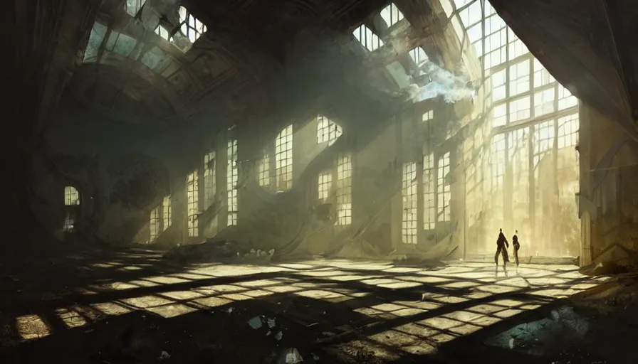
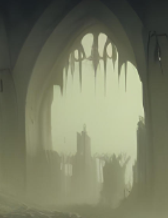

Courtyard
Not to be confused with The Courtyard, the servers

The modern The Courtyard, a crumbling hall of lime. Used in Courtyard 1 and 2.

The flag of the courtyard, representing the 7 asylums (servers).
Formed: June 2020
Servers: 7
Members: 20
Members in history: 40
Courtyard (cy) is the main friend group associated with this website. It was formed in 2020 when Torrah th (Torra) met Terratin (Tin) on Roblox. Some founding members joined in 2021, 2022 and 2023, in vc-text and Aslysmic.
As of 2026, there are 6 servers that still exist:
- Courtyard 2 (Courtyard)
- Courtyard 1 (Serai)
- torrah th too (torrah th too's server)
- torrah th (torrah's Server)
- tewst (tewst [dead])
- and vc-text (Terraria Avalon Mod)
Current members
- torra th
- Unboxing Video
- svord113
- Terratin
- Daluyan Messes
- Speedy
- purple bricc
- red laser
- Silly
- clay
- ty
- Ace
- noname
- morrah
- izzy
- lucy
- Plinko
- Elfy
- Basil
- Darkmango
There have been 9 servers in total that we have used as our hub, 8 of them being made by people in courtyard. Those are:
- vc-text
- Aslysmic
- torrah's Server
- tewst
- torra th too's server
- Finalebound
- Finalebound 2
- Courtyard 1
- Courtyard 2
See all history here
Symbols and Mythology
The flag

The inspiration for the flag
The flag of Courtyard was created by Unboxing on May 29th, 2024 12:12 AM CST. It represents mottos and other symbols:
- Colors - Colors of courtyard, taken from image on the top right
- The brackets - Represents [], aka THEROT | one with the rot
- The flipped inside - Represents the inverted | one with the inverted
- 7 stars for each asylum (server) - vc-text, aslysmic, torrah th, torrah th too, finalebound, finalebound 2 (or tewst), courtyard (both) | preserve the archives
Gallery
Alternate flag of courtyard, representing 8 asylums (including tewst or finalebound 2)
Credits to Wouter Kuyt (Blasfah) for his simple-tooltips library
And thanks to everyone in Courtyard
★ ★ ★ ★ ★ ★ ★ - 🙑 - ★ ★ ★ ★ ★ ★ ★